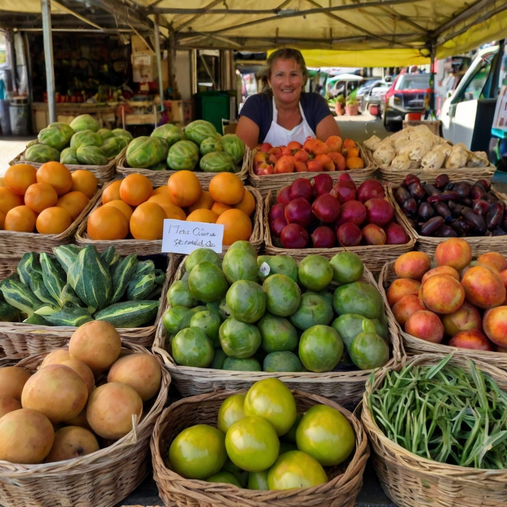

Como o Campo Influencia na Gastronomia Urbana
Alimentos frescos e sazonais

A relação entre o campo e a cidade nunca foi tão estreita quando se trata de gastronomia. Nos últimos anos, a busca por alimentos frescos, orgânicos e de alta qualidade tem impulsionado uma verdadeira revolução na gastronomia urbana, com influências diretas do campo. A seguir, exploramos como essa conexão se manifesta e transforma a cena gastronômica das cidades.
Mercados de produtores locais
Um dos principais impactos do campo na gastronomia urbana é a disponibilidade de alimentos frescos e sazonais. Chefs e consumidores estão cada vez mais conscientes da importância de utilizar produtos que respeitam o ciclo natural das colheitas. Isso não só garante sabores mais intensos e autênticos, mas também contribui para uma dieta mais saudável e sustentável.
Gastronomia sustentável
Os mercados de produtores locais tornaram-se pontos de encontro essenciais para aqueles que valorizam a qualidade e a procedência dos alimentos. Esses mercados permitem que pequenos produtores do campo tragam diretamente para a cidade uma variedade de produtos frescos, desde frutas e legumes até queijos e embutidos artesanais. Essa proximidade facilita o acesso a ingredientes que muitas vezes não estão disponíveis em grandes redes de supermercados.
Resgate de sabores tradicionais
A preocupação com a sustentabilidade ambiental também é um reflexo da influência do campo na gastronomia urbana. Restaurantes e chefs têm adotado práticas como o "farm-to-table" (da fazenda para a mesa), onde há uma ênfase em utilizar ingredientes cultivados localmente e de forma sustentável. Além disso, a redução do desperdício de alimentos tornou-se uma prioridade, com muitos estabelecimentos aproveitando integralmente os ingredientes, desde a raiz até as folhas.
Educação e consciência alimentar
O campo é uma fonte rica de tradições culinárias que muitas vezes se perdem nas grandes cidades. A redescoberta de receitas e métodos de preparo ancestrais tem revitalizado a gastronomia urbana, trazendo à tona sabores únicos e valorizando a herança cultural de diversas regiões. Pratos típicos do interior, como a canjica, o cuscuz e a pamonha, ganham novas releituras e espaço nos cardápios urbanos.
Ingredientes exclusivos e especiais
A conexão entre campo e cidade também se reflete na crescente educação e conscientização alimentar. Workshops, feiras gastronômicas e visitas a fazendas estão se tornando populares, proporcionando aos moradores urbanos uma oportunidade de aprender sobre a origem dos alimentos e a importância de práticas agrícolas sustentáveis. Isso promove uma maior valorização do trabalho dos produtores rurais e incentiva escolhas de consumo mais conscientes.
Ingredientes exclusivos e especiais
O campo oferece uma gama de ingredientes exclusivos que muitas vezes não são encontrados nas áreas urbanas. Plantas aromáticas, flores comestíveis, variedades antigas de grãos e legumes, além de carnes de animais criados de forma extensiva, são apenas alguns exemplos. Esses ingredientes especiais permitem que chefs urbanos criem pratos inovadores e únicos, diferenciando-se no competitivo cenário gastronômico das grandes cidades.